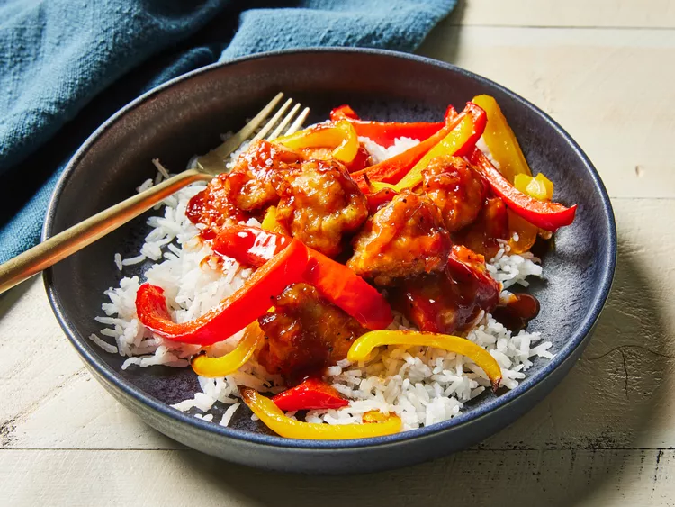

Sweet and Sour Chicken!

This baked sweet and sour chicken is savory sweet and the chicken gets
wonderfully crispy. Serve over rice just like in your favorite Chinese
restaurant.
Sweet and Sour Chicken is a classic Chinese takeout option most of us are
too afraid to make at home. Something about woks and cooking with
pineapple make it intimidating for most, but it is so much easier to make
than you would think. Of the classic Chinese Recipes that most people ask
for on my blog the one I hear about the absolute most is sweet and sour
chicken. I totally get it, it isn’t even just the recipe, but THAT SAUCE.
When I was a teenager and I made this sauce for the first time I also
actually started learning how to use chopsticks. So for a solid month (I
kid you not, my mom was not thrilled with this), I used chopsticks for
every meal and had a tiny little bowl of Sweet and Sour Chicken Sauce to
dip everything into it.
Ingredients
- 1/4 cup olive oil, divided
-
4 (6-ounce) boneless skinless chicken thighs, cut into 1 inch cubes
- 1/4 teaspoon freshly ground black pepper
- 1 3/4 teaspoons kosher salt
- 2 large eggs
- 1 cup all purpose flour
- 2 large multicolored bell peppers, sliced
- 1/2 cup ketchup
- 1/4 cup pineapple juice
- 1/4 cup honey
- 3 tablespoons soy sauce
- 1 tablespoon rice vinegar
- 3 cups cooked white rice
Steps
-
Gather all ingredients. Preheat oven to 475 degrees F (245 degrees C)
with racks in upper and lower third positions. Grease each of 2 baking
sheets with 1 tablespoon of the oil along 1 of the short sides; set
aside.
-
Sprinkle chicken evenly with pepper and 1 1/2 teaspoons of the salt, and
place in a bowl. Add eggs, and stir to coat. Place flour in a shallow
bowl or baking dish. Working in batches, dredge chicken in flour, and
shake off excess. Divide chicken between the prepared baking sheets,
spreading in an even layer along short edges.
-
Divide bell peppers among baking sheets, spreading evenly along other
short edges. Drizzle bell peppers evenly with remaining 2 tablespoons
oil, and toss gently to coat.
-
Bake in the preheated oven, rotating baking sheets halfway through,
until chicken is browned in spots, about 15 minutes. Remove chicken and
bell peppers from the oven; use a spatula to carefully flip chicken only
. Return to the oven, and continue baking at 475 degrees F (245 degrees
C) until chicken is crispy and a thermometer inserted into thickest
portion of chicken registers 165 degrees F (73 degrees C), about 5
minutes.
-
While chicken is baking, whisk together ketchup, pineapple juice, honey,
soy sauce, rice vinegar, and remaining 1/4 teaspoon salt in a small
saucepan. Bring to a boil over medium, whisking occasionally. Reduce to
a simmer over medium-low, and cook, stirring often, until mixture is
reduced to 3/4 cup and coats back of spoon, about 5 minutes. Remove from
heat.
-
Pour 1/4 cup of the prepared sauce over chicken on the baking sheets;
toss to coat evenly. Divide rice, chicken, and bell peppers evenly among
bowls. Drizzle evenly with remaining 1/2 cup sauce. Serve immediately.